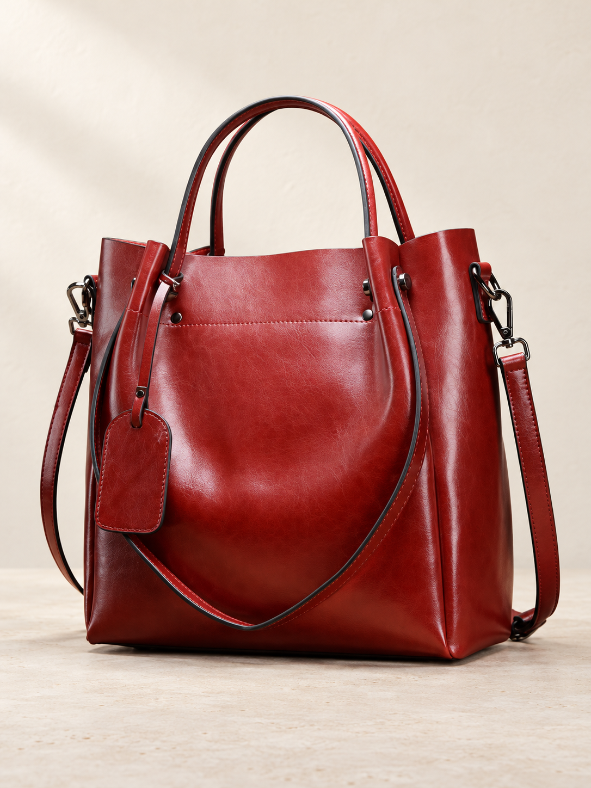
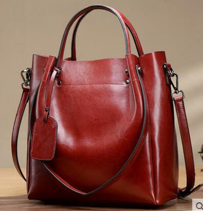

Excluded from upload
All four supplier photos are only about 400 pixels wide; generated detail cannot be adequately checked against them.

Wine Red
Compare with the original photo
Check the silhouette, color, grain, stitching, strap attachments and hardware against the source before approval.

Nola everyday bag
$99.00 USD
Retail price · reviewed under your delegated approval
Nola has a clean vertical silhouette with room for a simple daily edit. Its understated exterior keeps the focus on the material, while an internal compartment separates smaller items.
- Vertical silhouette
- Internal compartment
- Four source color options
Materials
Split cowhide leather.
4 new product photos · source data and CJ references preserved.
Review notes
- Oil-wax finish is named in the supplier title but not explained in the specifications; confirm finish before adding a care claim.
- Lining description requires supplier confirmation.
- Care instructions, product dimensions still require confirmation. No unverified values have been inserted.
- Generated photos remain candidates. Compare each with its source before approving it.
Variants, supplier costs and proposed retail prices
All amounts below are USD. Supplier costs exclude shipping and other business costs; proposed retail prices are not approved.
| Original variant | CJ SKU | Supplier cost | Proposed retail |
|---|---|---|---|
| Wine Red | CJNS191354701AZ | $21.39 | $99.00 |
| Black | CJNS191354702BY | $21.39 | $99.00 |
| Brown | CJNS191354703CX | $21.39 | $99.00 |
| Gray | CJNS191354704DW | $21.39 | $99.00 |
SEO and product organization
SEO title: Nola everyday bag | Atelier Veyne
Meta description: Nola everyday bag. Vertical silhouette. Internal compartment. Discover considered everyday bags at Atelier Veyne.
Proposed collection: Shoulder bags
Tags: shoulder-bag, cj-import, wine-red, black, brown, gray
Live Shopify IDs, swatches, duplicate checks and fulfillment links are still unverified.